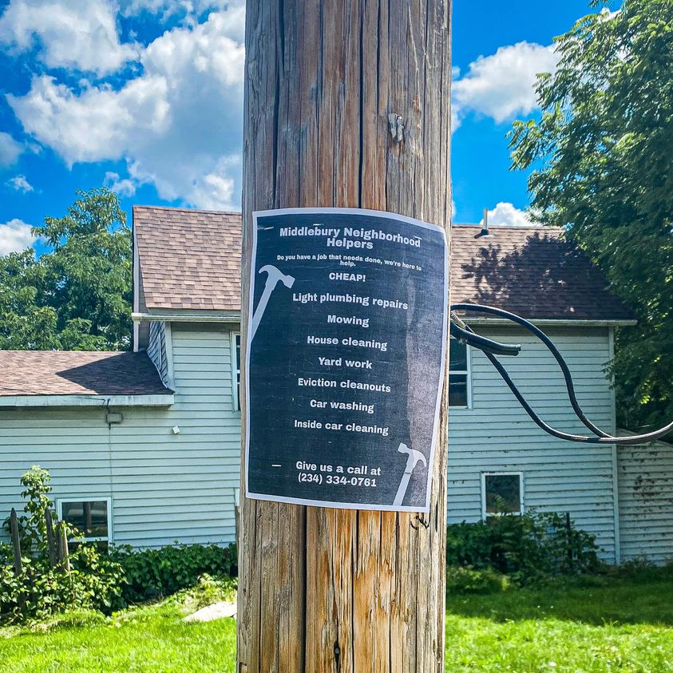

Mobile uploads
This is the @[109672538495516:274:Church of the Nomadic Spirit] focus right now.
We are focusing on empowerment.
Houseless people have some of the most free minds of people I’ve ever met. It’s probably the biggest reason I love them so much.
While this makes standard jobs not ideal for many of them, it does make them incredible entrepreneurs.
We are now promoting our new handy-person services in the neighborhood. And we are opening our workshop this week (more on that later.)